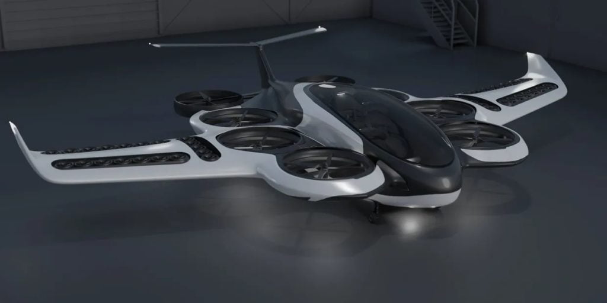

အခြား ပြိုင်ဖက် ထောင်လိုက်တက်ဆင်း မိုးပျံယာဉ် တွေနဲ့ မတူတာကတော့ ဒီယာဉ်ဟာ ဟိုက်ဒရိုဂျင် ဓါတ်ငွေ့ရည် လောင်ဆာကို အသုံးပြု ပျံသန်းမှာပဲ ဖြစ်ပါတယ်။
ဒီ ထောင်လိုက်တက်ဆင်း မိုးပျံယာဉ်ကို Soar “ဆော” လို့ အမည်ပေးထားပါတယ်။ ဒီ မိုးပျံယာဉ်ကို ပျံသန်းမယ့် ပန်ကာတွေကို လျှပ်စစ်ဓါတ်အားနဲ့ လှည့်ပတ်မှာ ဖြစ်ပေမယ့် ဒီပန်ကာတွေ အတွက် လိုအပ်တဲ့ လျှပ်စစ်ဓါတ်အားကိုတော့ ဟိုက်ဒရိုဂျင် လောင်ဆာ ဓါတ်ငွေ့ရည် လောင်ကျွမ်းမှုက ရရှိတဲ့ အပူနဲ့ ဒိုင်နမိုကို လှည့်ပတ်ပြီး ထုတ်ယူမှာ ဖြစ်ပါတယ်။ ဒါ့အပြင် ပိုလျှံတဲ့ လျှပ်စစ်ဓါတ်အားကို သိုလှောင်ထားဖို့ ဘက်ထရီ အပိုတွေလဲ ပါရှိမှာ ဖြစ်ပါတယ်။ တနည်းအားဖြင့် တော့ Hybrid စနစ်နဲ့ ပျံသန်းမှာ ဖြစ်ပါတယ်။
လျှပ်စစ်စွမ်းအင်သုံး မိုးပျံယာဉ်တွေရဲ့ ပျံသန်းနိုင်တဲ့ အကွာအဝေးက အများအားဖြင့် မိုင် ၈၀-၁၀၀ လောက်ပဲ ရှိကြပါတယ်။ အခု မိုးပျံယာဉ်မှာတော့ ဟိုက်ဒရိုဂျင်အရည်ကို လောင်စာအဖြစ် အသုံးပြုထားတာမို့ အကွာအဝေး မိုင် ၅၀၀ ကနေ ၈၀၀ လောက်ထိ ပျံသန်းနိုင်မယ်လို့ ဆိုပါတယ်။
သူ့ရဲ့ ဒီဇိုင်းကလဲ အခြား VTOL ထောင်လိုက်တက်ဆင်း ယာဉ်တွေနဲ့ မတူပါဘူး။ ယာဉ်ကိုယ်ထည်ရဲ့ ဘေးမှာ ကပ်လျှက် အောက်ကိုစိုက်ထားတဲ့ ပင်မပန်ကာ အကြီး ၈ လုံး ရှိပါတယ်။ ယာဉ်ရဲ့ တဖက်တချက်မှာ ပန်ကာကြီး ၄ လုံးစီကို ရှေ့နောက် တန်းစီ ထားတာ ဖြစ်ပါတယ်။
နောက်ဆုံးက ပန်ကာ တစုံကို နောက်ကို လှန်နိုင်အောင် ပြုလုပ်ထားပါတယ်။ ဒီပန်ကာက ယာဉ်ပျံသန်းချိန်မှာ ရှေ့သွားဖို့ လိုအပ်တဲ့ ရှေ့ကို တွန်းကန်အားကို ပေးမှာ ဖြစ်ပါတယ်။

ကုမ္ပဏီရဲ့ ထုတ်ပြန်ချက်မှာ ၆ ယောက်စီး မိုးပျံယာဉ်ရဲ့ ကွန်ပျူတာ ဒီဇိုင်းပုံကို ပြသထားပါတယ်။ ပြသထားတဲ့ ဒီဇိုင်းက ခရီးသည် ၅ ယောက်နဲ့ လေယာဉ်မှူး ၁ ယောက်တို့ လိုက်ပါပျံသန်းနိုင်မယ့် အမျိုးအစား ဖြစ်ပါတယ်။
ဒီ ယာဉ်ပျံက အကွာအဝေး မိုင် ၅၀၀ ထိ ပျံသန်းနိုင်မယ်လို့ ဆိုပါတယ်။ ဒါပေမယ့် တကယ်ထုတ်လုပ်မယ့် ယာဉ်ရဲ့ ကိုယ်ထည်ကတော့ FAA လေကြောင်းပျံသန်းမှု ကြီးကြပ်ရေး အဖွဲ့ရဲ့ အတည်ပြုမယ့် ပုံစံမို့ ဒီဇိုင်းပုံစံ အနေနဲ့ အနည်းငယ် ကွာခြားနိုင်တယ်လို့ ဆိုပါတယ်။
ဒီ ‘ဆော’ မိုးပျံယာဉ် စမ်းသပ်ပျံသန်းမှုကို ၂၀၂၂ ခုနှစ်ထဲမှာ ပြုလုပ်နိုင်မယ်လို့ ဆိုပါတယ်။ ဒီပျံသန်းမယ့် ယာဉ်မှာလဲ ဟိုက်ဒရိုဂျင် လောင်ဆာရည်သုံး အင်ဂျင်ကို အသုံးပြုပြီး ဘက်ထရီတွေကို အားသွင်းပြီး ပျံသန်းမှာ ဖြစ်ပါတယ်။ ထူးဆန်းတာက အခြား ဟိုက်ဒရိုဂျင် အရည်သုံး လျှပ်စစ်အင်ဂျင်တွေမှာလို ဟိုက်ဒရိုဂျင်ကနေ လျှပ်စစ် တိုက်ရိုက်ထုတ်တာ မဟုတ်ပဲ ဒီ ဟိုက်ဒရိုဂျင် ဓါတ်ငွေ့ကို လောင်ကျွမ်းပြီးမှ လျှပ်စစ်ထုတ်မှာ ဖြစ်ပါတယ်။
ဒီကိစ္စက ဒီ မိုးပျံယာဉ် ထုတ်လုပ်မှုမှာ အခက်အခဲ အတားအဆီး တစ်ခု ဖြစ်နေနိုင်ပါတယ်။ လက်ရှိ လေယာဉ်ပျံသုံး ဟိုက်ဒရိုဂျင် အင်ဂျင်တွေက စမ်းသပ်ဆဲ အဆင့်ပဲ ရှိကြပါသေးတယ်။ ဒါ့ကြောင့် ၂၀၂၄/၂၀၂၅ ခုနှစ်လောက်မှာ စီးပွားဖြစ် ထုတ်လုပ်မှု စဖို့ ဆိုတာက နဲနဲတော့ အခက်အခဲ ရှိနိုင်ပါတယ်။ တကယ် အလုပ်ဖြစ်တဲ့ ဟိုက်ဒရိုဂျင် လောင်စာရည်သုံး အင်ဂျင် ထုတ်ဖို့က အရင်းအနှီးလဲ နဲနဲတော့ များမယ့် သဘော ရှိပါတယ်။
(ဘာသာပြန်သူ မှတ်ချက် – ဟိုက်ဒရိုဂျင် လောင်စာရည်သုံး အင်ဂျင်တွေက ရှိပါတယ်။ ဒါပေမယ့် လေယာဉ်မှာ တပ်ဆင် အသုံးပြုဖို့ အဆင့်မှီတဲ့အင်ဂျင်တွေ လက်ရှိမှာ ထွက်မလာ သေးတာ ဖြစ်ပါတယ်။ တနည်းပြောရရင် ရောင်းချမယ့် လေယာဉ်မှာ တပ်ဆင် သုံစွဲခွင့် ခွင့်ပြုချက်လက်မှတ် ရတဲ့ ဟိုက်ဒရိုဂျင် အင်ဂျင် ထွက်လာဖို့ အချိန်ကြာအုံးမှာ ဖြစ်ပါတယ်)။
ဒါပေမယ့် ဒီမိုးပျံယာဉ် ကုမ္ပဏီကတော့ လက်ရှိမှာ ဧက ၇၃၀ အကျယ်အဝန်းရှိတဲ့ စက်ရုံဆောက်ဖို့ တက္ကဆက်ပြည်နယ်မှာ နေရာရွေးထားပြီး ဖြစ်ပါတယ်။ ဒီစက်ရုံနေရာက SpaceX လွှတ်တင်တဲ့ နေရာနဲ့လဲသိပ်မဝေးလှပါဘူး။ ကုမ္ပဏီက ၂၀၂၂ မှာ စမ်းသပ် မိုးပျံယာဉ်ကို ပျံသန်းပြီး ၂၀၂၄ မှာ စတင် ထုတ်လုပ်ဖို့ ရည်မှန်းထားပါတယ်။
ဒီ မိုးပျံယာဉ်ရဲ့ ဈေးနှုန်းနဲ့ ပါတ်သက်လို့တော့ ဘာမှ ပြောကြားတာ မရှိပါဘူးခင်ဗျာ။
Reference: Paragon to test its liquid hydrogen-fueled Soar eVTOL with 800 miles range | Inceptive Mind